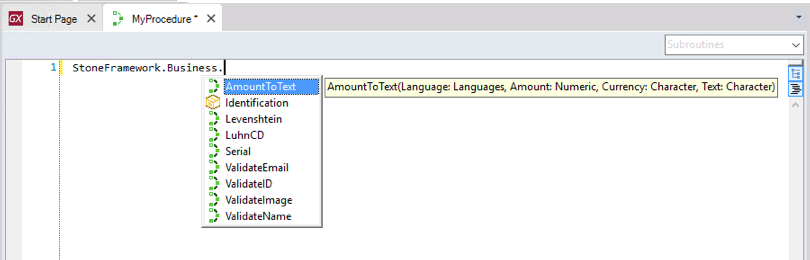

GeneXus allows distribution of the API and binaries of a Module and installation of it in other Knowledge Bases.
A Module installed using this mechanism, provided by another KB, has the following characteristics:
That provides the following benefits:
GeneXus itself uses this mechanism to provide the GeneXus Core module and others, like GeneXus Artificial Intelligence.
Through the following steps, you can create a module, distribute it, install it in another KB, and use it there.
First, you create a module with specific functionality and test it thoroughly in the platforms you want to provide it.
For this, read HowTo: Creating a Module Object, HowTo: Adding an object to a Module, and Modules - Defining an interface.
Then, you package and publish the module, adding a description of the functionality, link to documentation, and other relevant information.
For this, read Package and Publish Modules.
Now, you are done: You shared your module on a Modules Server.

Note: The binaries of the referenced modules will be copied to your target environment directory during build time.
There are several MSBuild tasks that help automate tasks or installation, publishing, etc. : More information at Modules MsBuild Tasks
FAQ
Q: What if the following situation happens: In KB "Provider" is Object A and that object is exported to KB "Client". Then, in KB "Provider", Object A is put into a module M and then that Module is packaged and installed in KB "Client"?
A: Since the internal GUID of object A remains unchanged, GeneXus resolves all; that means: References to object A will now point to M.A. A is not anymore in its folder, it is in the module M under References in KB Explorer; it is read-only and only its interface is available.
Q: Not every Procedure in my module got packaged. What happened?
A: In order to be packaged, your objects in the module must be in some main object call tree. So if you have unreachable objects, these will not be packaged. Make sure you add the needed objects to some main object call tree. It could be just a dummy Procedure outside of your Module just for that purpose.